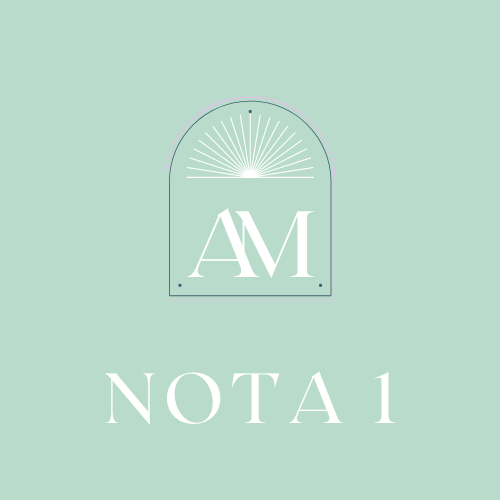
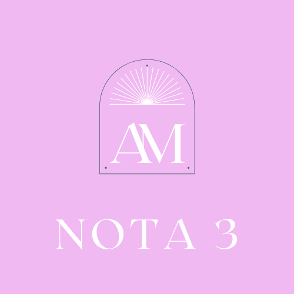

La astrología es el estudio de los astros y su influencia sobre nuestra cotidianidad. El movimiento de los astros ha sido seguido ancestralmente para marcar el paso del tiempo, el inicio de las estaciones, y hasta para demarcar el ciclo femenino o de la cosecha. Mia no practica una astrología predictiva y genérica. Más bien, se inspira en la astrología cabalística y se apoya en herramientas como el coaching para no solo ofrecer un panorama de los tránsitos planetarios según tu signo solar y ascendente, sino para brindarte consejos prácticos y así ayudarte a pasar de la teoría a la acción.